Blood Collection & Laboratory Solutions
DICUMED supplies blood collection, phlebotomy, IV access and laboratory consumables to clinics, laboratories and healthcare organisations across the United Kingdom.
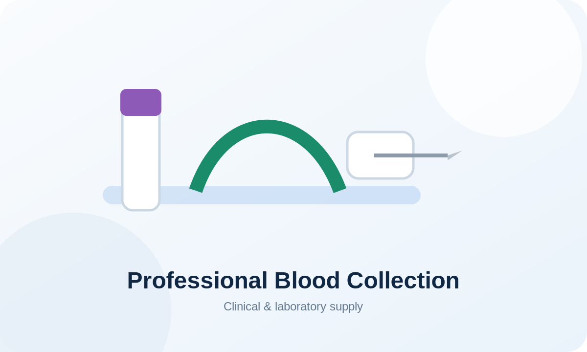
Professional blood collection supply
Built for clinical, laboratory and multi-site procurement workflows.
Professional supply for phlebotomy, diagnostics and laboratory workflows.
Everything needed for a professional phlebotomy or IV station
DICUMED is being developed as a complete clinical consumables supplier — from blood collection and skin preparation to IV access, dressings, PPE and specimen handling. Products without an approved DICUMED supplier or final SKU are shown as enquiry/planned categories rather than with invented specifications.
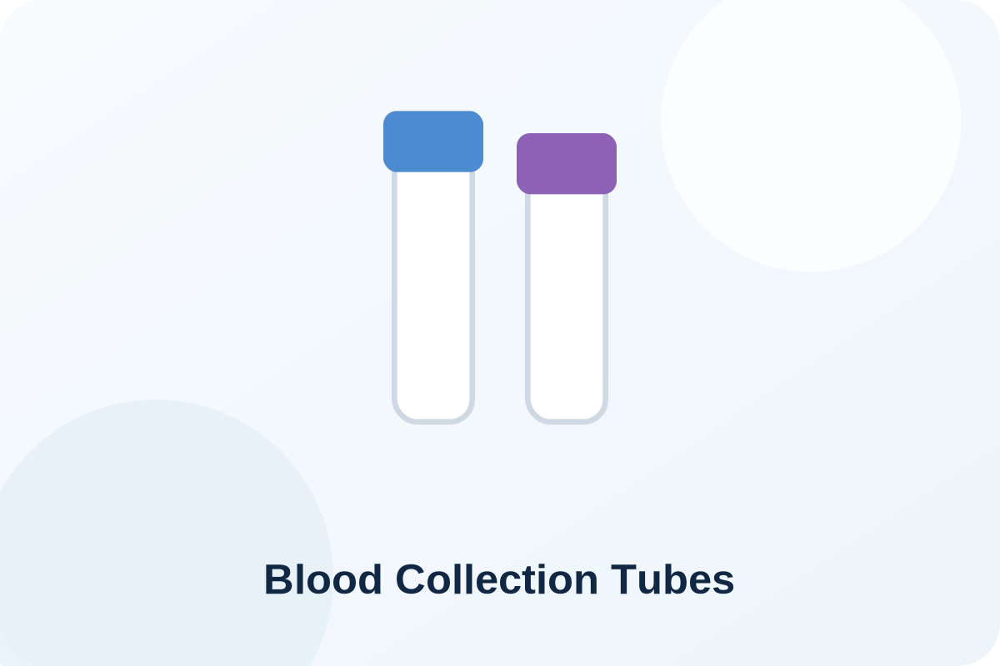
Blood Collection Tubes
Serum, EDTA, citrate, heparin, glucose, trace-element and specialist tube families.
View products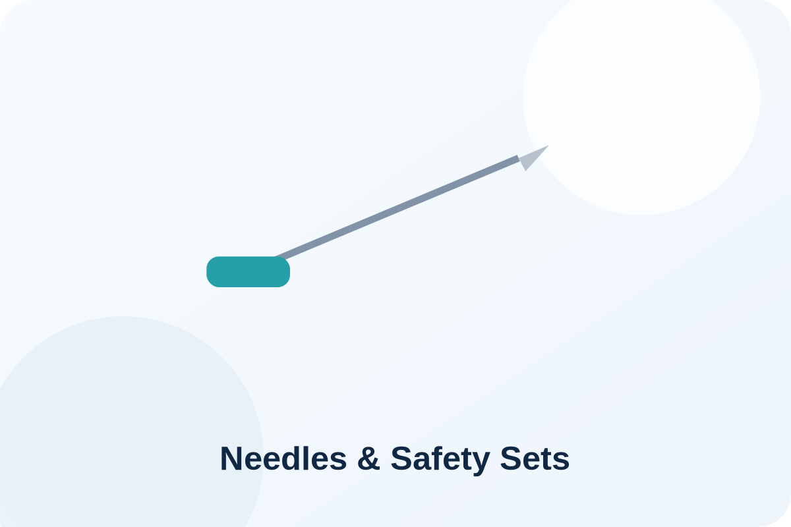
Needles & Safety Blood Collection Sets
Straight blood collection needles and butterfly-style safety collection sets.
View products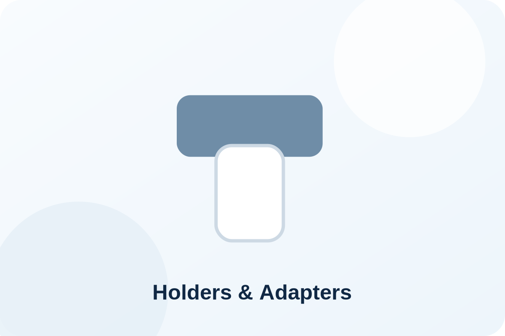
Tube Holders & Adapters
Standard holders, safety holders, Luer adapters and compatible blood collection accessories.
Contact DICUMEDTourniquets
Reusable and disposable tourniquets for routine venepuncture and IV access.
Contact DICUMEDSkin Preparation
Alcohol preparation wipes and skin-preparation consumables for venepuncture and IV procedures.
Contact DICUMED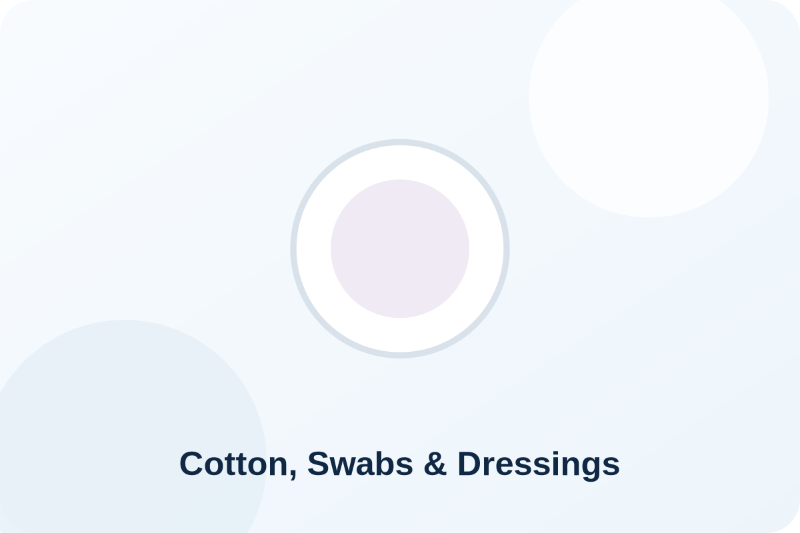
Cotton, Swabs & Dressings
Cotton wool, non-woven swabs, plasters and post-venepuncture dressing essentials.
Contact DICUMED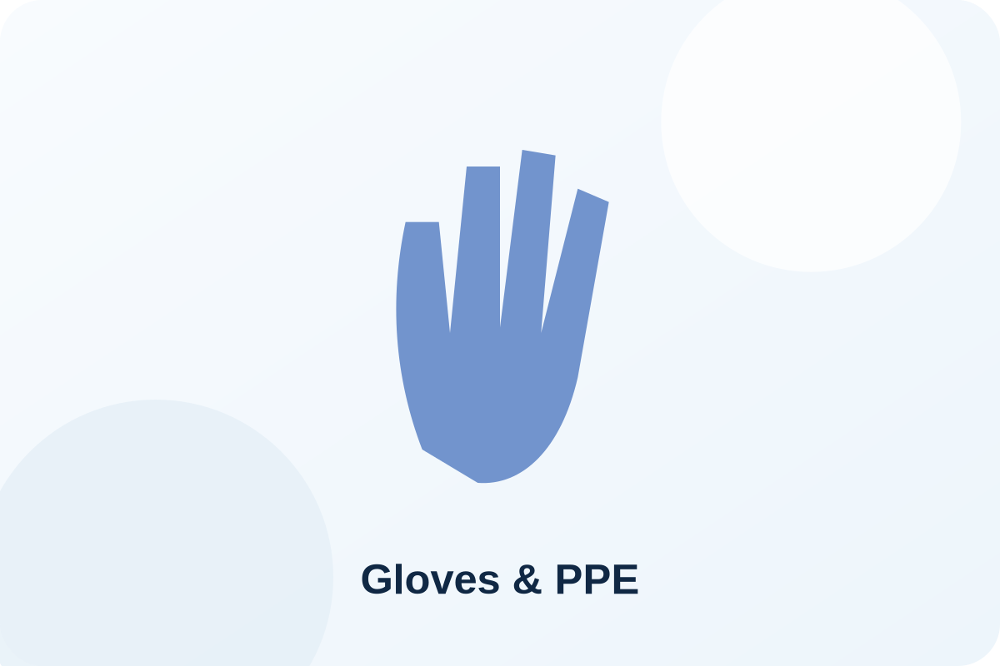
Gloves & PPE
Examination gloves and routine protective consumables for clinical stations.
Contact DICUMED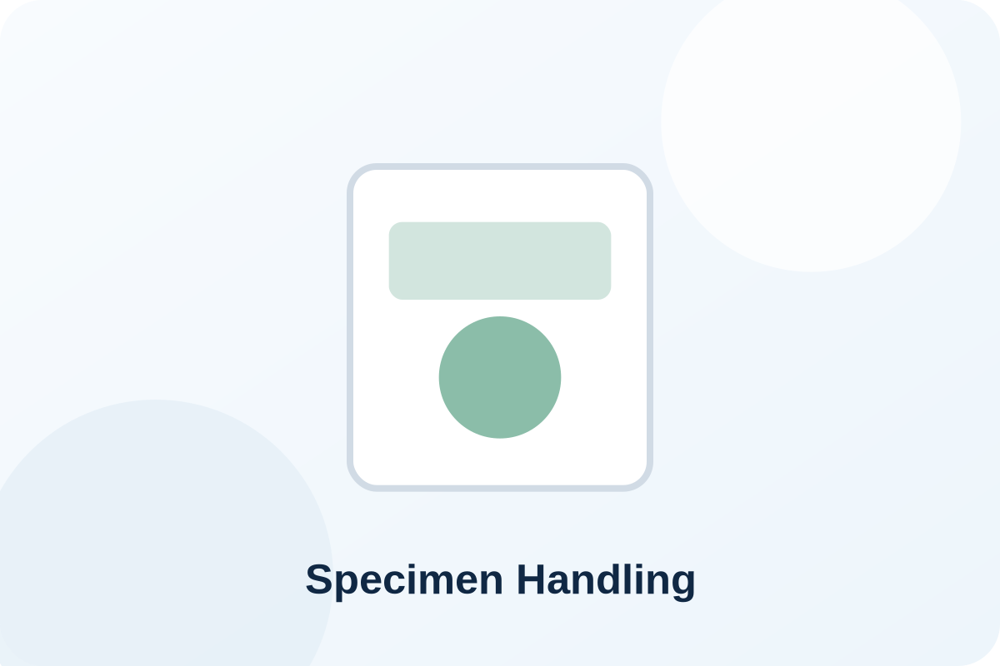
Specimen Handling
Specimen bags, transport consumables, racks and supporting laboratory handling products.
Contact DICUMED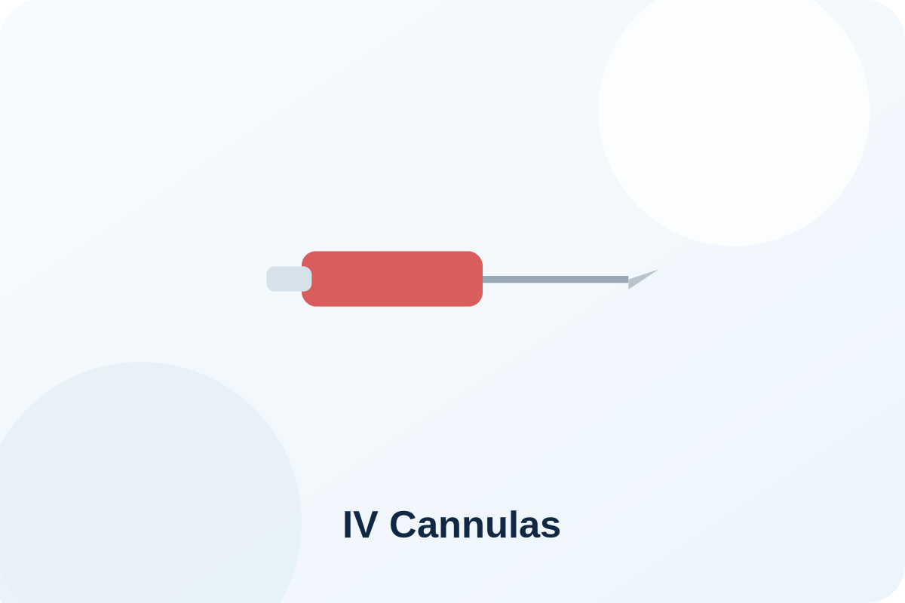
IV Cannulas
Peripheral IV cannulas in clinically appropriate sizes, subject to final supplier range.
Contact DICUMEDIV Infusion & Extension Sets
Infusion sets, extension lines, connectors and related IV administration accessories.
Contact DICUMED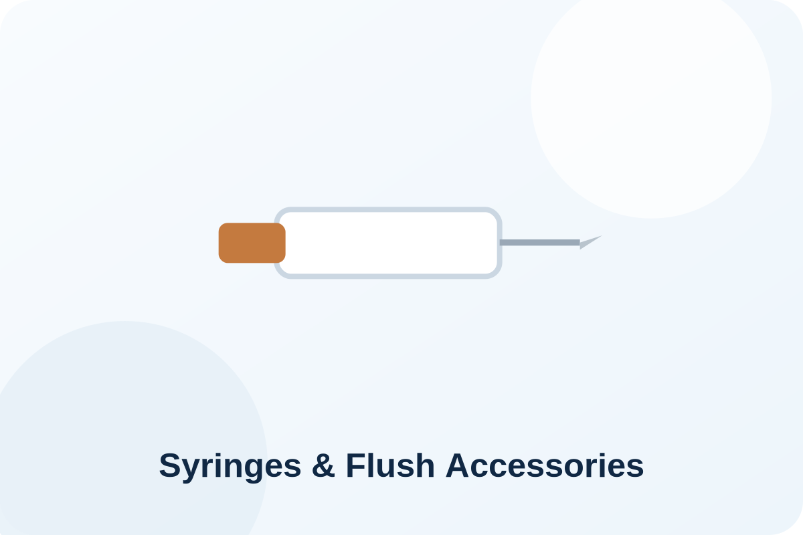
Syringes & Flush Accessories
Syringes and compatible accessories for IV preparation and line-management workflows.
Contact DICUMEDIV Dressings & Securement
Transparent dressings and securement products for peripheral IV access sites.
Contact DICUMEDProfessional supply with a modern healthcare focus
A cleaner, more direct purchasing experience for clinics, laboratories and multi-site healthcare organisations.
Blood collection products organised by clinical use — not just catalogue codes.
Search by additive, draw volume, needle gauge, product family or manufacturer reference while keeping DICUMED as the primary customer-facing brand.
Explore the catalogueBusiness & Volume Orders
Structured for repeat supply, carton quantities and contract pricing.
Multi-Site Supply
Support for healthcare groups requiring delivery across several clinic locations.
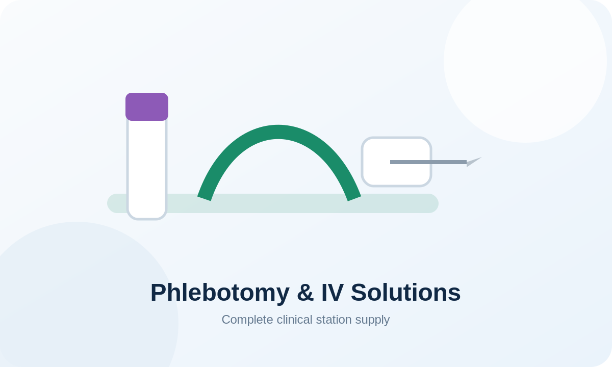
Designed around how healthcare teams actually buy
Customers can search by clinical workflow, additive, draw volume, product family or manufacturer reference.
- Routine serum, EDTA, citrate, heparin and glucose pathways
- Specialist trace element and blood-grouping products
- Venepuncture needles, holders and safety sets
- Mini and capillary collection products
Technical information without unsupported claims
The site is structured to publish manufacturer-approved technical and regulatory information while avoiding claims that DICUMED has not yet documented.
- Instructions for Use
- Declarations and certificates where applicable
- Order of Draw resources
- Needle and tube guides
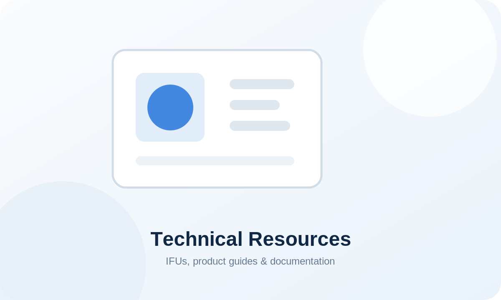
Product, pricing or business enquiries
Contact DICUMED for product information, volume quotations, samples, documentation and multi-site supply enquiries.
Need help choosing products?
Send us your required tube types, draw volumes, annual quantities or current products and we can help prepare a tailored DICUMED quotation.
Contact UsReliable products. Reliable supply. Reliable diagnostics.
DICUMED is being developed as a UK medical supplies company focused on professional blood collection, phlebotomy and laboratory consumables. The DICUMED range is designed around professional blood collection, phlebotomy and laboratory workflows for UK healthcare organisations.